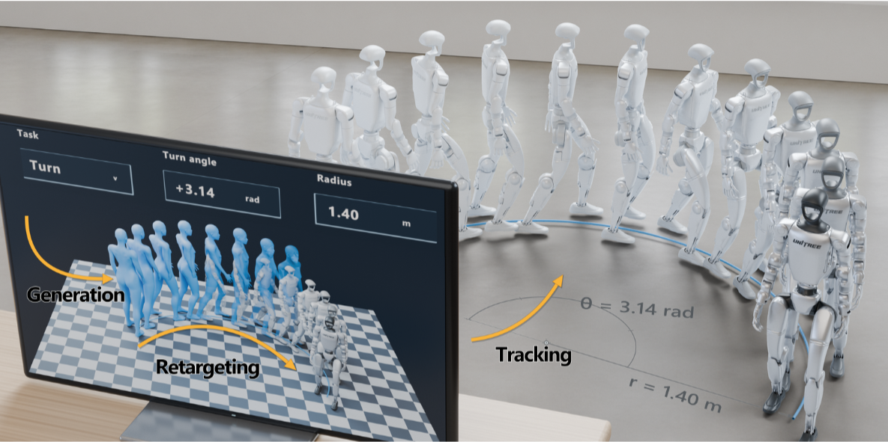
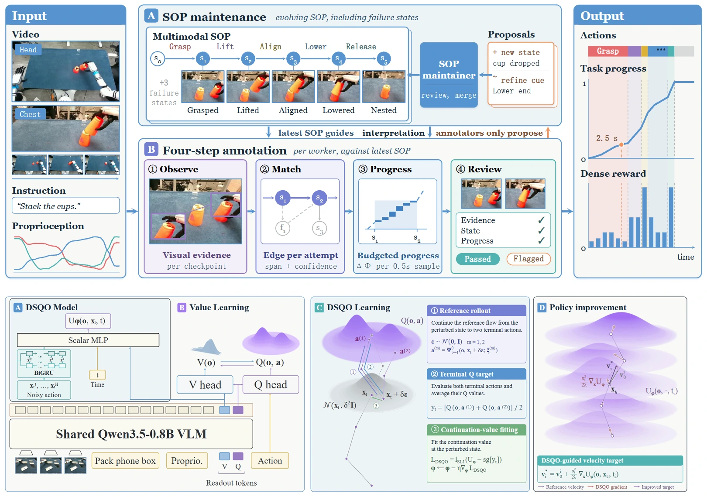
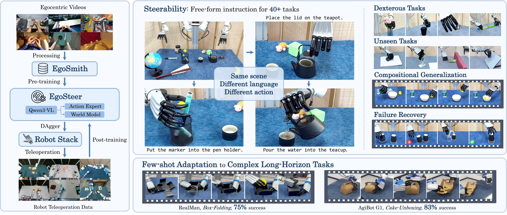
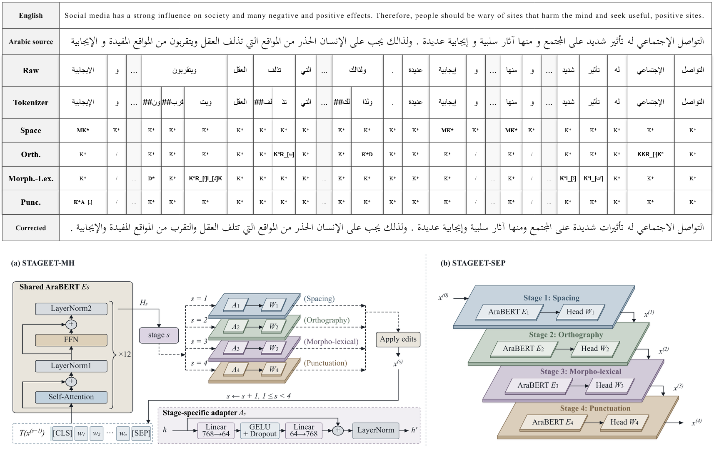

Chinese
Native speaker
Undergraduate at Peking University, Class of 2028
I am an undergraduate student at Peking University, majoring in Arabic at the School of Foreign Languages and pursuing a second major in Artificial Intelligence at the School of Electronics Engineering and Computer Science. My research interests include embodied intelligence, natural language processing, and agent applications. I am advised by Yaodong Yang and Alaa Mamdouh Akef.
Native speaker
DALF C1 59.5
Certificate obtained: 2024IELTS 7.5
Certificate obtained: 2019TEM-4 69.275
Certificate obtained: 2026Basic proficiency
Basic proficiency



